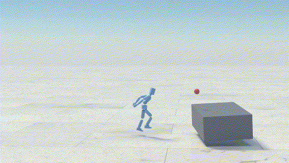
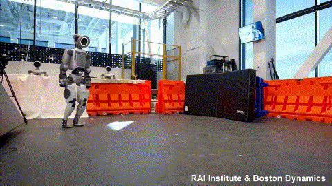
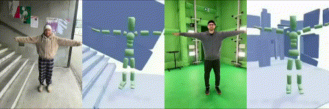
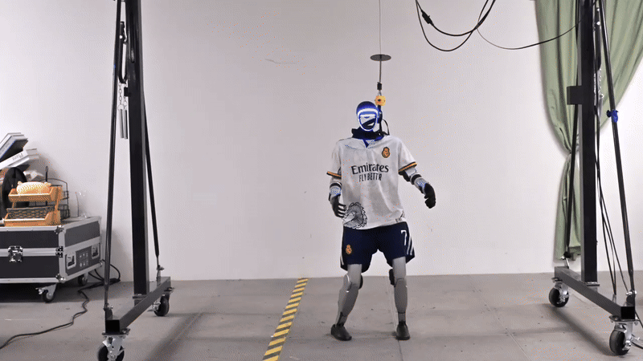
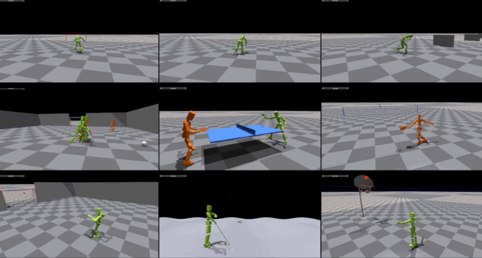

|
Jiashun Wang
I am a final-year PhD student at Robotics Institute, School of Computer Science at Carnegie Mellon University, advised by Prof. Jessica Hodgins.
I obtained my master degree at UC, San Diego, advised by Prof. Xiaolong Wang. I received my B.S. degree in Statistics and Data Science from Fudan University.
I have interned at NVIDIA, working with Prof. Xue Bin Peng, and at RAI working with Dr. Farbod Farshidian, where I train policies on E-Atlas and Unitree G1.
My research lies at the intersection of computer graphics and robotics. I am interested in how humanoid agents acquire and reuse human-like motor skills to interact with the physical world and other agents.
My work focuses on developing RL-based motion imitation methods to learn robust and generalizable controllers from human motion data.
As a next step, I study how humanoid agents can strategically compose and coordinate behaviors over time to operate in complex, dynamic, and competitive environments.
Email /
Google Scholar /
Github
|

|
* indicates equal contributions.

|
Generalizing from References using a Multi-Task Reference and Goal-Driven RL Framework
Jiashun Wang, M. Eva Mungai, He Li, Jean Pierre Sleiman, Jessica Hodgins, Farbod Farshidian
RSS, 2026
|
|

|
HIL: Hybrid Imitation Learning for Dynamic Athletic Control
Jiashun Wang, Yifeng Jiang, Haotian Zhang, Chen Tessler, Davis Rempe, Jessica Hodgins, Xue Bin Peng
ACM Transactions on Graphics
|
|

|
ZEST: Zero-shot Embodied Skill Transfer for Athletic Robot Control
Jean Pierre Sleiman, He Li, Alphonsus Adu-Bredu, Robin Deits, Arun Kumar, Kevin Bergamin, Mohak Bhardwaj, Scott Biddlestone, Nicola Burger, Matthew A. Estrada, Francesco Iacobelli, Twan Koolen, Alexander Lambert, Erica Lin, M. Eva Mungai, Zach Nobles, Shane Rozen-Levy, Yuyao Shi, Jiashun Wang, Jakob Welner, Fangzhou Yu, Mike Zhang, Alfred Rizzi, Jessica Hodgins, Sylvain Bertrand, Yeuhi Abe, Scott Kuindersma, Farbod Farshidian
Under review
|
|

|
CRISP: Contact-guided Real2Sim from Monocular Video with Planar Scene Primitives
Zihan Wang*, Jiashun Wang*, Jeff Tan, Yiwen Zhao, Jessica Hodgins, Shubham Tulsiani, Deva Ramanan
ICLR, 2026
|
|

|
ASAP: Aligning Simulation and Real-World Physics for Learning Agile Humanoid Whole-Body Skills
Tairan He*, Jiawei Gao*, Wenli Xiao*, Yuanhang Zhang*, Zi Wang, Jiashun Wang, Zhengyi Luo, Guanqi He, Nikhil Sobanbab, Chaoyi Pan, Zeji Yi, Guannan Qu, Kris Kitani, Jessica Hodgins, Linxi "Jim" Fan, Yuke Zhu, Changliu Liu, Guanya Shi
RSS, 2025
|
|
|
Strategy and Skill Learning for Physics-based Table Tennis Animation
Jiashun Wang,
Jessica Hodgins,
Jungdam Won
SIGGRAPH, 2024
|
|

|
SMPLOlympics: Sports Environments for Physically Simulated Humanoids
Zhengyi Luo*,
Jiashun Wang*,
Kangni Liu*,
Haotian Zhang,
Chen Tessler,
Jingbo Wang,
Ye Yuan,
Jinkun Cao,
Zihui Lin,
Fengyi Wang,
Jessica Hodgins,
Kris Kitani
Preprint, 2024
|
|